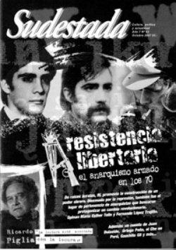

Buscar
Ernesto Guevara: por los caminos del Perú
En los primeros días de 1952, dos jóvenes aventureros y soñadores partieron de Argentina, iniciando un recorrido que los llevaría por lejanas tierras de Sudamérica. A 40 años de su asesinato en Bolivia, evocaciones del joven Guevara durante la estadía más larga del viaje que cambiaría su vida.
Edición N° 63
Octubre 2007
Revista bimensual
Comprar edición impresaSumario
- Resistencia Libertaria: el anarquismo armado en los 70
- Ricardo Piglia: "La lectura está asociada con la locura"
- Polémica: ¿La izquierda en crisis?
- Noventa años después
- Caballero de mar y tierra, un cuento de Juan Duizeide
- Ernesto Guevara: por los caminos del Perú
- Ortega Peña: el abogado del diablo
- Provocación con aroma policial
Compartir Articulo
"Necesitaba conocer bien a fondo las necesidades de los pueblos pobres y sabía que para conocerlas había necesariamente que hollar caminos y más caminos, pero no como simple turista, sino como él lo hizo, deteniéndose en las rutas, no para tomar fotografías aisladas o interesantes paisajes, sino para empaparse en la miseria humana presente en cada recodo de las sendas que recorrería y para investigar las causas de esa miseria. Sus viajes serían los de un investigador social que camina para comprobar, pero también para tratar de aliviar en lo posible el dolor humano."
Ernesto Guevara Lynch,
"Viaje de Ernesto y Granado".
La motonave surcaba lentamente las terrosas aguas del Ucayali. La espesura de la vegetación amazónica confería al paisaje un aspecto monótono. El clima tropical producía un efecto sofocante y de sopor. Para entretener las dilatadas horas del día, entre los pasajeros de primera clase de El Cisne se jugaba a los naipes. Dos jóvenes se mantenían apartados de ese pasatiempo. Uno de ellos, robusto y de baja estatura, era conversador y de espíritu jocoso. Su nombre: Alberto Granado. Lo acompañaba su amigo Ernesto Guevara, de complexión delgada y de estatura mediana, quien se restablecía de una crisis asmática que lo venía aquejando desde antes de iniciada la travesía fluvial. El recorrido tenía como punto de destino la colonia de San Pablo, sobre las márgenes del Amazonas. Eran los primeros días de junio de 1952.
Aquel par de jóvenes, que procedían de Argentina, habían emprendido su itinerario seis meses antes, partiendo desde Córboba en una vieja motocicleta. El viaje, que los había conducido hasta las profundidades de la selva amazónica, tenía por propósito conocer la realidad social y cultural de Latinoamérica.
Ernesto anhelaba efectuar ese viaje de aventura en 1951
y convino con su amigo Alberto Granado en realizarlo juntos. Ambos se habían conocido en Córdoba, en 1941, cuando Ernesto tenía trece años (Alberto era siete años mayor); a pesar de la diferencia de edad, los unía su afición por el fútbol y el placer de la lectura. Pero sería en los años de universidad cuando hubieron de estrechar sus vínculos (en esos días, Ernesto era conocido entre sus amigos por el mote de 'Pelao', por causa de su corte de pelo. Además, Alberto lo llamaba por el apodo de Fúser, y Ernesto le decía a él Mial). En la época del viaje, Alberto era un profesional bioquímico, en tanto que Ernesto cursaba el último año en la Facultad de Medicina de la Universidad de Buenos Aires.
Las peripecias y las aventuras del azaroso recorrido serían anotadas por Guevara en un diario personal. La parte más extensa de tales escritos concierne al Perú por tratarse del país -de los cinco que visitaron-, en el que permanecieron mayor tiempo.
La historia del primer viaje de Ernesto Guevara de la Serna por Sudamérica ha sido documentada en una serie de investigaciones sobre su vida. De las grandes biografías que se le han dedicado (entre las que podemos destacar las escritas por Paco Ignacio Taibo II, Jon Lee Anderson, y Jorge Castañeda), es la de Anderson la que, con mayor amplitud, se ocupa de su paso por el Perú.
En la presente nota seguiremos las huellas de Guevara en sus exploraciones por tierras peruanas, viaje que representó una experiencia formativa y fundamental en el joven estudiante de medicina y futuro comandante de la Revolución cubana.
Ingreso al Perú
Era la mañana soleada del 24 de marzo de 1952. Sin dinero y sin más pertenencias que la ropa que llevaban puesta y un pequeño equipaje, los dos argentinos ingresaban al territorio peruano desde Arica. El árido paisaje del norte de Chile quedaba atrás. Un mundo nuevo aparecía ante su atenta mirada. En el Perú gobernaba el general Manuel Odría, cuya dictadura derechista ejercía la represión política contra sus adversarios. En otro orden, el país atravesaba por una fase de bonanza económica, en virtud del incremento notable de sus exportaciones durante la guerra de Corea.
La primera ciudad a la que arribaron los viajeros argentinos fue Tacna, una apacible localidad próxima a la frontera. Al caer la tarde, partieron hacia la carretera con el proyecto de conseguir ser transportados gratuitamente, pero la suerte les resultó esquiva. Con la ilusión de encontrar alguna vivienda en el territorio circunvecino, prosiguieron avanzando. Bajo el manto de la noche, y en medio de un paraje desolado, los caminantes se hallaban exhaustos y hambrientos. Pero lo más arduo de soportar era el frío, que arreciaba con fuerza. Hubieron de hacer un alto en el largo camino y se abrigaron con las mantas que llevaban en su equipaje. Como ello no era suficiente, encendieron una tímida fogata, que tampoco los aliviaría demasiado; entonces, optaron por continuar la caminata. Alberto y Ernesto sentían el viento helado en sus rostros como el corte de un cuchillo. Anduvieron por varias horas durante la noche cerrada y silenciosa, y descansaron de trecho en trecho. Al despuntar el alba, hallaron por ventura un rancho, donde sus rústicos moradores les vendieron pan y queso. Allí, al comunicar que venían de Argentina, tuvieron que responder preguntas sobre lo que sus interlocutores describían como "el maravilloso país donde vivía Perón y su mujer, Evita, donde todos los pobres tienen las mismas cosas que los ricos y no se explota al indio". Aliviados de sus penurias nocturnas, pernoctaron por espacio de algunas horas sobre el lecho seco de un río, antes de reanudar la marcha hacia el mediodía.
En la altiplanicie
Por la tarde, los argentinos se detuvieron a descansar y fue entonces cuando vieron que se acercaba un camión, que les fue permitido abordar. Éste transportaba a una montonera de campesinos de la etnia aymara que observaban con curiosidad a los nuevos pasajeros. Descendieron del camión en el pueblo de Tarata, donde Guevara contempló por primera vez la conjunción de las tradiciones española e indígena, atestiguada en el mestizaje de su arquitectura. Por otra parte, observaba ávidamente a la población indígena y reflexionaba sobre su estado de postración: no se trataba de la otrora raza orgullosa que desafiara el poder del Inca; había devenido en una etnia sometida. La constatación acerca de la situación social del poblador indígena y de sus formas arcaicas de vida conmovió profundamente la sensibilidad de Ernesto, rasgo que se echa de ver en varios pasajes de sus observaciones de viaje. En efecto, fue durante aquel transitar cuando pudo conocer de cerca a los pueblos aborígenes de los Andes peruanos...
La nota completa en la edición gráfica de Sudestada nº63-Octubre 2007
Comentarios
Gabriel García Higueras, desde Perú
Articulos más vistos


LIBRERÍA SUDESTADA

Colección infantil

Distribuidora de Libros

Suscripción

Sudestada en URUGUAY

Otros articulos de esta edición
Ricardo Piglia: "La lectura está asociada con la locura"
Con la excusa de adentrarnos en El último lector, su último ensayo, nos metimos en el laberinto Piglia, donde las ...
Ortega Peña: el abogado del diablo
Rodolfo Ortega Peña fue algo más que el representante legal de presos políticos durante los años 60 y 70; se ...
Resistencia Libertaria: el anarquismo armado en los 70
Resistencia Libertaria era una organización que defendía la constitución de un poder obrero a partir de un clasismo que empujó ...
Provocación con aroma policial
Polémica: ¿La izquierda en crisis?
(A partir de la publicación del editorial del número 60 de Sudestada, un colaborador de la revista planteó por escrito ...